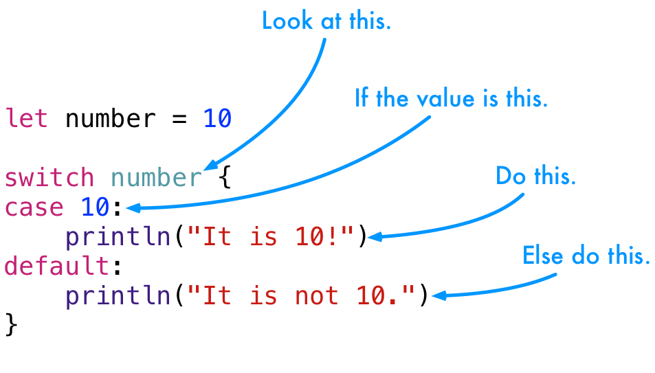

Swift also gives us a variation on the switch statement.
1 2 3 4 5 6 7 8 | switch <some value to consider> {
case <value 1>:
<respond to value 1>
case <value 2>, <value 3>:
<respond to value 2 or 3>
default:
<otherwise, do something else>
}
|
They work like this.

Here's a simple example.
1 2 3 4 5 6 7 8 | let number = 10
switch number {
case 10:
println("It is 10!")
default:
println("It is not 10.")
}
|